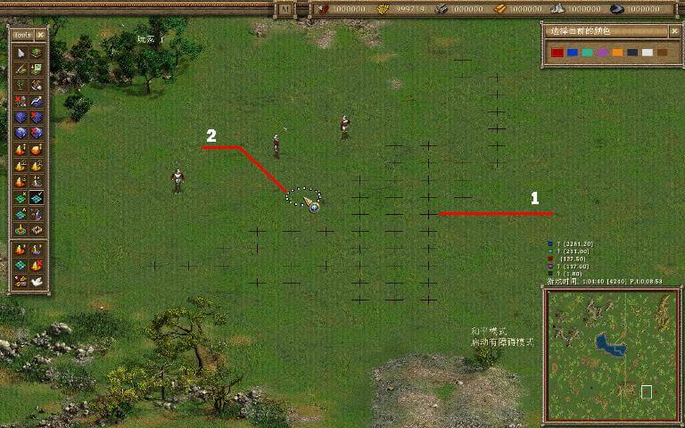
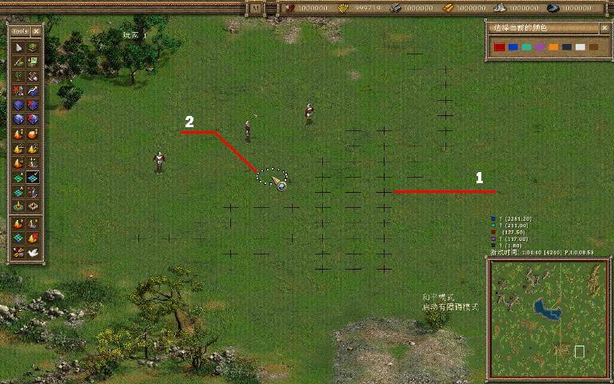

你的地图已经被创建得差不多了，你可以准备进行游戏了。对于任何一张地图来说，地图上可以到达的地区是非常重要的，这一章节将会教你如何改变地图上的可到达地区。首先，点击这个按钮 ，它可以让你调整地图上可到达的地区，因此，你可以让不可到达的地区变成可以到达地区。
，它可以让你调整地图上可到达的地区，因此，你可以让不可到达的地区变成可以到达地区。
点击这个按钮可以打开添加阻碍地区模式。在这种模式下，用鼠标左键点击地图上的区域，可以使该地区变为不可通行地区（被标记为黑色的十字）。
点击这个按钮开启畅通模式。在这种模式下，用鼠标左键点击地图上的区域，可以使该地区变为可通行地区（被标记为咖啡色的十字）。点击这个按钮可以开启默认阻碍模式。在这种模式下，用鼠标左键点击地图上的区域，可以使该地区变为可通行地区或者不可通行地区（标记为黑色或者咖啡色的十字被删除）。
当你在编辑可到达地区的时候，要避免设置一些狭窄的通道，士兵可能会在这裡被卡住或者在这裡打转。如果你已经创建了一些狭窄的走道，请在用旗帜标记一条你的士兵容易通过的道路（旗帜在编辑树模式裡，详情请看第五章节）。十字和旗帜是用来编辑的，它们在游戏中将不会被显示。

1、 创建无法到达地区
2、 这个光标显示下一个无法到达地区的位置
点击这个按钮可以打开添加阻碍地区模式。在这种模式下，用鼠标左键点击地图上的区域，可以使该地区变为不可通行地区（被标记为黑色的十字）。
点击这个按钮开启畅通模式。在这种模式下，用鼠标左键点击地图上的区域，可以使该地区变为可通行地区（被标记为咖啡色的十字）。点击这个按钮可以开启默认阻碍模式。在这种模式下，用鼠标左键点击地图上的区域，可以使该地区变为可通行地区或者不可通行地区（标记为黑色或者咖啡色的十字被删除）。
当你在编辑可到达地区的时候，要避免设置一些狭窄的通道，士兵可能会在这裡被卡住或者在这裡打转。如果你已经创建了一些狭窄的走道，请在用旗帜标记一条你的士兵容易通过的道路（旗帜在编辑树模式裡，详情请看第五章节）。十字和旗帜是用来编辑的，它们在游戏中将不会被显示。

1、 创建无法到达地区
2、 这个光标显示下一个无法到达地区的位置